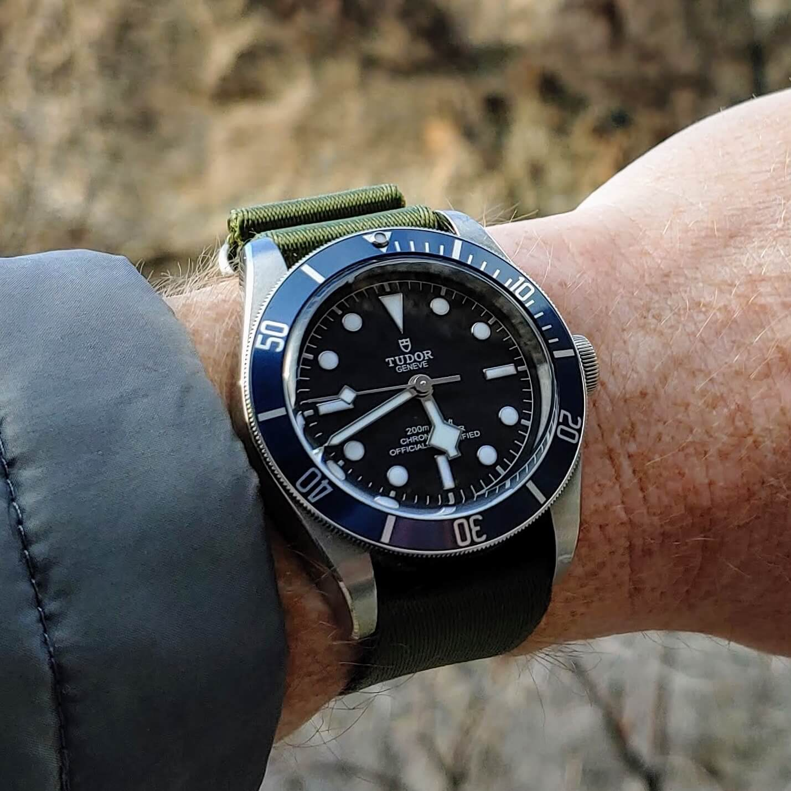
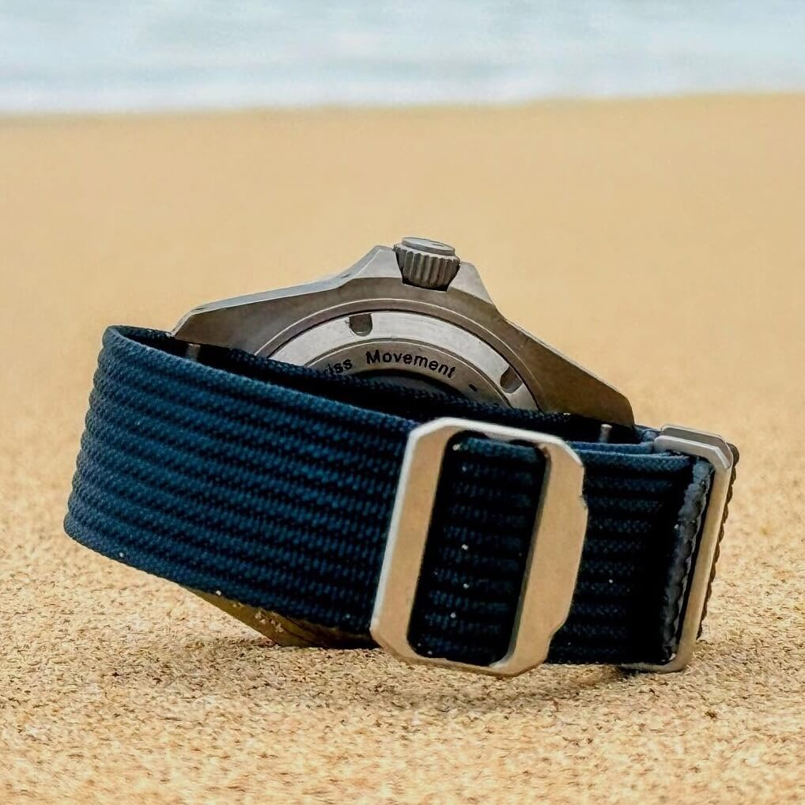
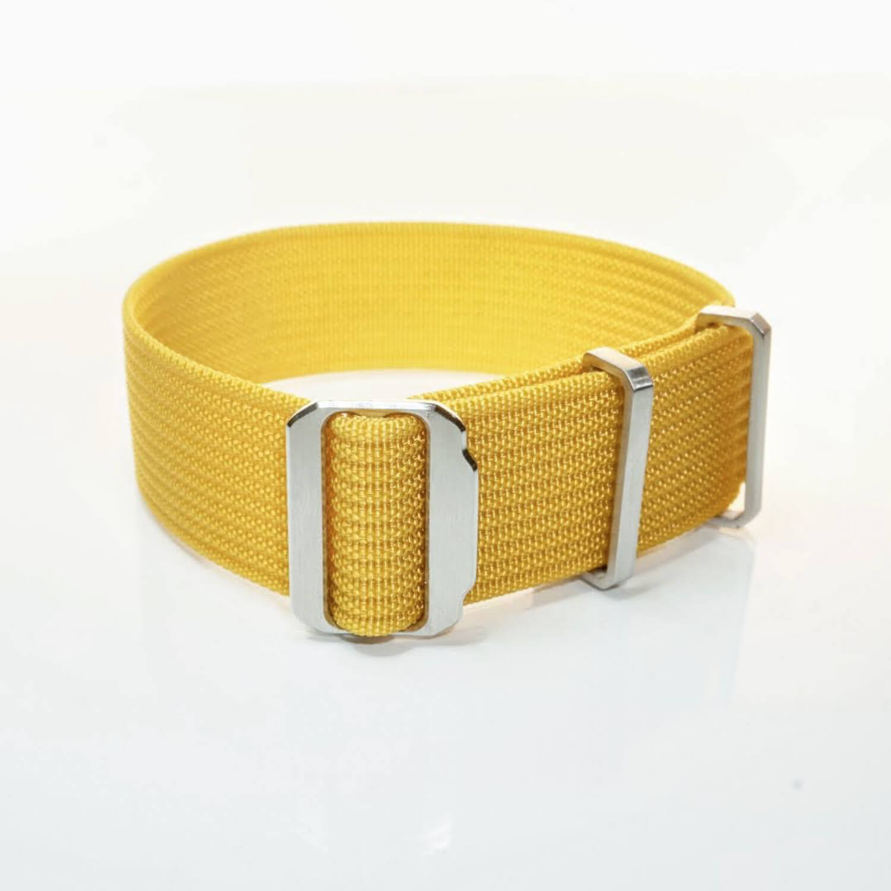
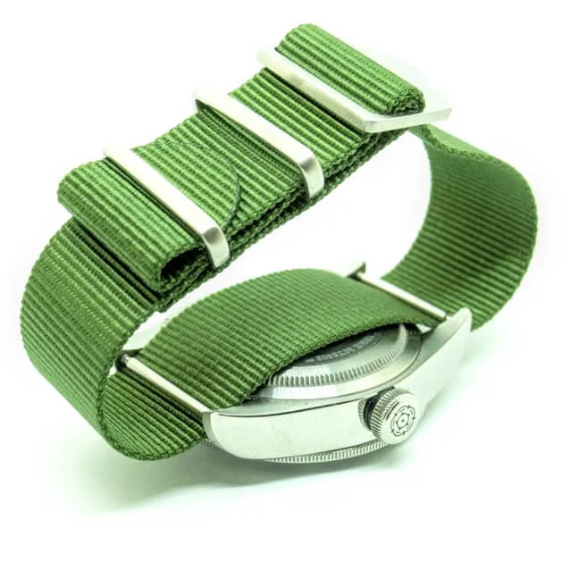
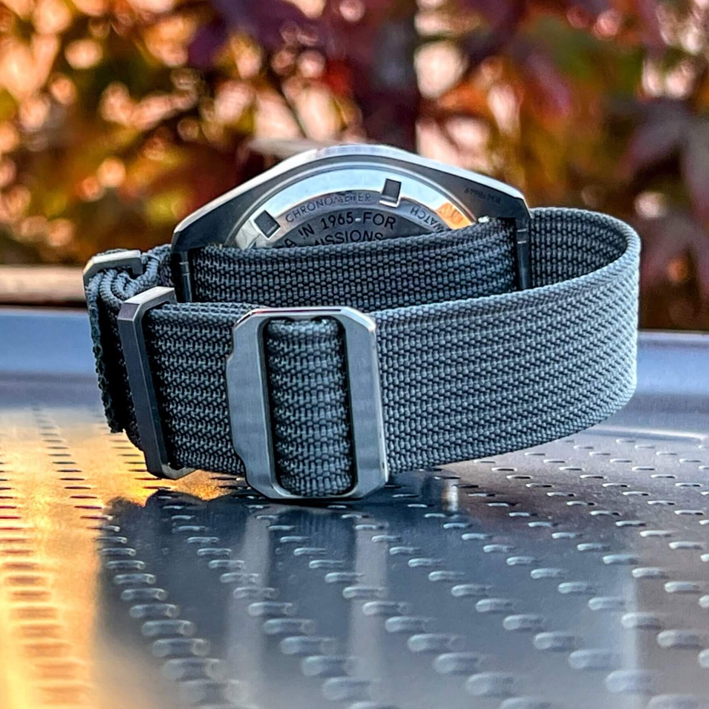
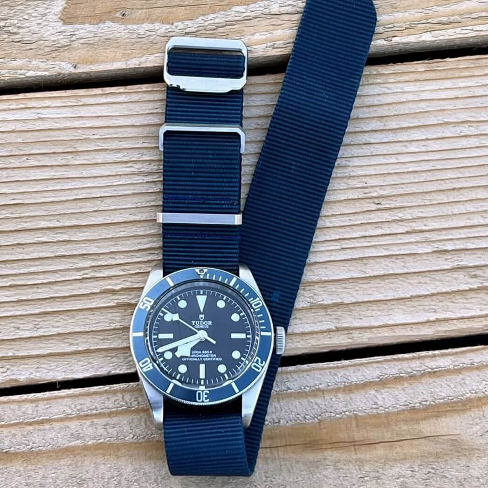
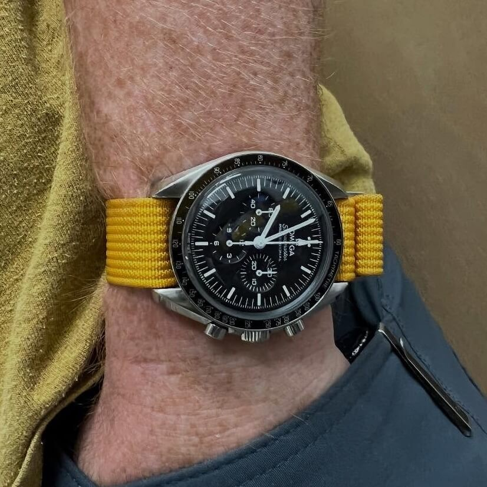
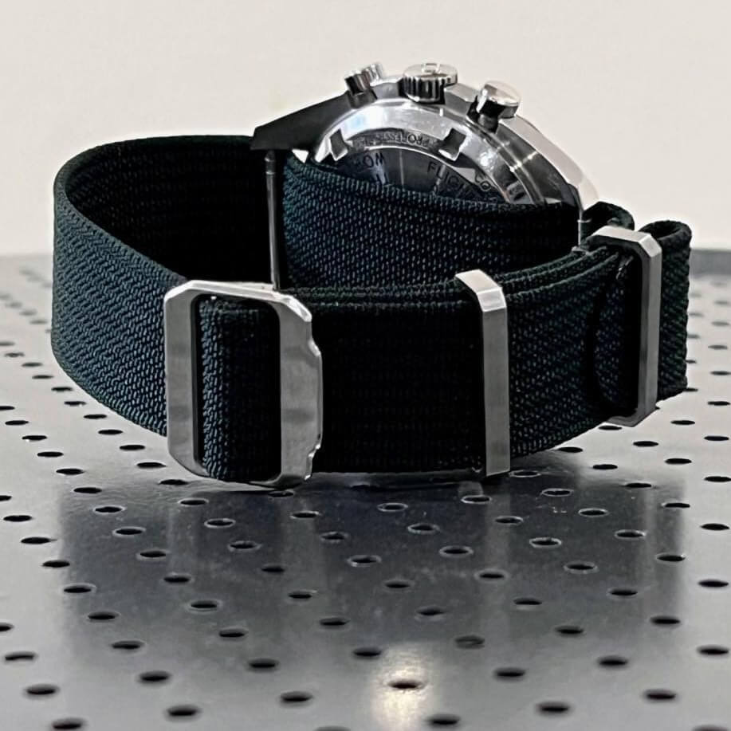
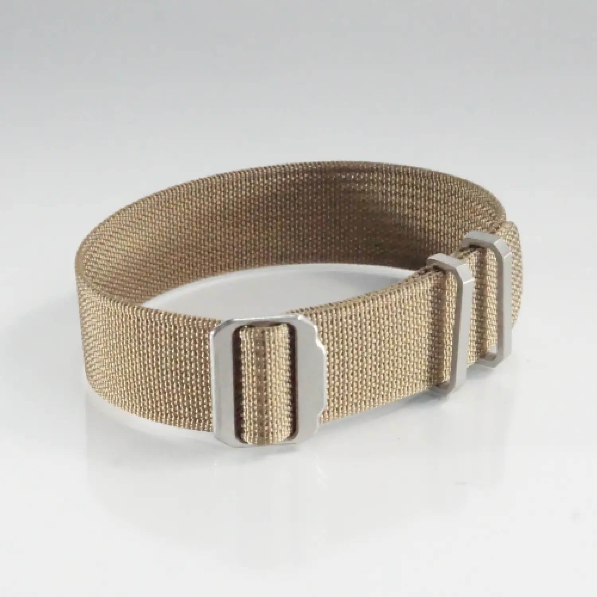

Spring Made
Spring Made Straps is a company that engineers and sells super adjustable, hole-free nylon watch straps designed for a perfect, custom fit on any wrist.
Spring Made Straps is a company that engineers and sells super adjustable, hole-free nylon watch straps designed for a perfect, custom fit on any wrist.
FREE US SHIPPING - on 2+ straps
US Ground SHIPPING - only $8
US Priority SHIPPING - around $16
Int'l First Class SHIPPING - only $21

Spring Made produces and sells pass-through nylon straps.
Width: Their products are made in three sizes: 20mm, 21mm, and 22mm. Not all collections have the 21mm option, but luckily, they have segmented their Shop offering so it is easy to select products that are available in 21mm.
Material: Spring Made offers a variety of nylon watch straps, each with a unique texture. The Ribbed straps feature a tough long rib fabric, while the Deluxe straps use a smooth, silky weave for a softer feel and a slight sheen. For a more traditional option, the Classic straps have a standard nylon weave.
Click on the link below to browse all available styles:
Spring Made watch strapsThe founder of Spring Made, Austin, developed a deep appreciation for quality and precision from his mother's standards and his university studies in manufacturing engineering. After 15 years in the field and a growing passion for watchmaking, he became frustrated that watch straps did not offer the same quality or perfect fit as the watches themselves. This inspired him to design and prototype a new strap in his workshop, creating a simple, effective mechanism to solve the problem of getting a good fit.
He launched the Spring Made online shop in 2018, catering to customers who, like him, value durable, well-designed, and functional products over disposable goods. The success of this concept led him to expand into other products like belts, which use the same core technology. Today, all products are designed and tested by Austin, with final assembly and sewing done in his workshop in Provo, Utah.
Spring Made ships worldwide.








All images on this page are courtesy of Spring Made, and are used with permission.